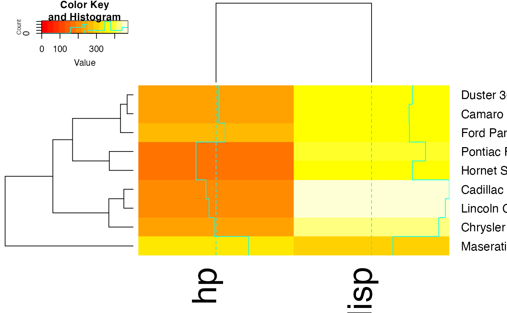
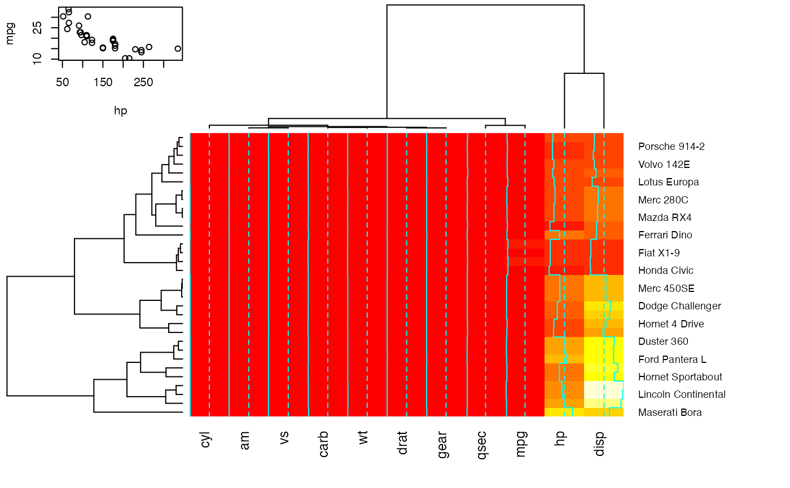
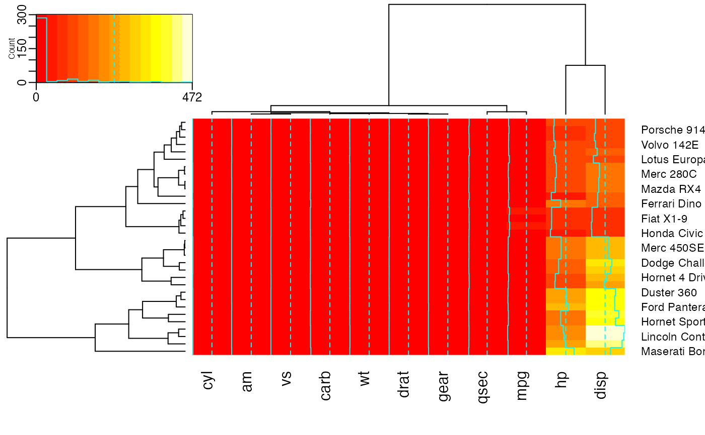
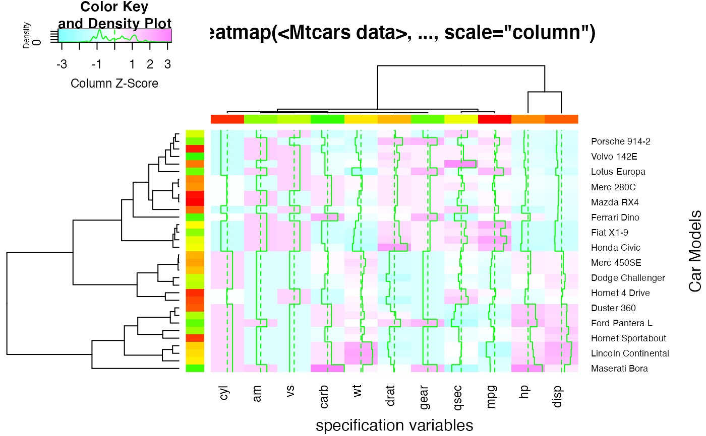

Enhanced Heat Map
heatmap.2.RdA heat map is a false color image (basically
image(t(x))) with a dendrogram added to the left side
and/or to the top. Typically, reordering of the rows and columns
according to some set of values (row or column means) within the
restrictions imposed by the dendrogram is carried out.
This heatmap provides a number of extensions to the standard R
heatmap function.
heatmap.2 (x, # dendrogram control Rowv = TRUE, Colv=if(symm)"Rowv" else TRUE, distfun = dist, hclustfun = hclust, dendrogram = c("both","row","column","none"), reorderfun = function(d, w) reorder(d, w), symm = FALSE, # data scaling scale = c("none","row", "column"), na.rm=TRUE, # image plot revC = identical(Colv, "Rowv"), add.expr, # mapping data to colors breaks, symbreaks=any(x < 0, na.rm=TRUE) || scale!="none", # colors col="heat.colors", # block sepration colsep, rowsep, sepcolor="white", sepwidth=c(0.05,0.05), # cell labeling cellnote, notecex=1.0, notecol="cyan", na.color=par("bg"), # level trace trace=c("column","row","both","none"), tracecol="cyan", hline=median(breaks), vline=median(breaks), linecol=tracecol, # Row/Column Labeling margins = c(5, 5), ColSideColors, RowSideColors, cexRow = 0.2 + 1/log10(nr), cexCol = 0.2 + 1/log10(nc), labRow = NULL, labCol = NULL, srtRow = NULL, srtCol = NULL, adjRow = c(0,NA), adjCol = c(NA,0), offsetRow = 0.5, offsetCol = 0.5, colRow = NULL, colCol = NULL, # color key + density info key = TRUE, keysize = 1.5, density.info=c("histogram","density","none"), denscol=tracecol, symkey = any(x < 0, na.rm=TRUE) || symbreaks, densadj = 0.25, key.title = NULL, key.xlab = NULL, key.ylab = NULL, key.xtickfun = NULL, key.ytickfun = NULL, key.par=list(), # plot labels main = NULL, xlab = NULL, ylab = NULL, # plot layout lmat = NULL, lhei = NULL, lwid = NULL, # extras extrafun=NULL, ... )
Arguments
| x | numeric matrix of the values to be plotted. |
|---|---|
| Rowv | determines if and how the row dendrogram should be
reordered. By default, it is TRUE, which implies dendrogram is
computed and reordered based on row means. If NULL or FALSE, then no
dendrogram is computed and no reordering is done. If a
|
| Colv | determines if and how the column dendrogram should
be reordered. Has the options as the |
| distfun | function used to compute the distance (dissimilarity)
between both rows and columns. Defaults to |
| hclustfun | function used to compute the hierarchical clustering
when |
| dendrogram | character string indicating whether to draw 'none', 'row', 'column' or 'both' dendrograms. Defaults to 'both'. However, if Rowv (or Colv) is FALSE or NULL and dendrogram is 'both', then a warning is issued and Rowv (or Colv) arguments are honoured. |
| reorderfun |
|
| symm | logical indicating if |
| scale | character indicating if the values should be centered and
scaled in either the row direction or the column direction, or
none. The default is |
| na.rm | logical indicating whether |
| revC | logical indicating if the column order should be
|
| add.expr | expression that will be evaluated after the call to
|
| breaks | (optional) Either a numeric vector indicating the
splitting points for binning |
| symbreaks | Boolean indicating whether breaks should be
made symmetric about 0. Defaults to |
| col | colors used for the image. Defaults to heat colors
( |
| colsep, rowsep, sepcolor | (optional) vector of integers
indicating which columns or rows should be separated from the
preceding columns or rows by a narrow space of color
|
| sepwidth | (optional) Vector of length 2 giving the width
(colsep) or height (rowsep) the separator box drawn by colsep and
rowsep as a function of the width (colsep) or height (rowsep) of a
cell. Defaults to |
| cellnote | (optional) matrix of character strings which will be placed within each color cell, e.g. p-value symbols. |
| notecex | (optional) numeric scaling factor for |
| notecol | (optional) character string specifying the color for
|
| na.color | Color to use for missing value ( |
| trace | character string indicating whether a solid "trace" line should be drawn across 'row's or down 'column's, 'both' or 'none'. The distance of the line from the center of each color-cell is proportional to the size of the measurement. Defaults to 'column'. |
| tracecol | character string giving the color for "trace" line. Defaults to "cyan". |
| hline, vline, linecol | Vector of values within cells where a
horizontal or vertical dotted line should be drawn. The color of
the line is controlled by |
| margins | numeric vector of length 2 containing the margins
(see |
| ColSideColors | (optional) character vector of length
|
| RowSideColors | (optional) character vector of length
|
| cexRow, cexCol | positive numbers, used as |
| labRow, labCol | character vectors with row and column labels to
use; these default to |
| srtRow, srtCol | angle of row/column labels, in degrees from horizontal |
| adjRow, adjCol | 2-element vector giving the (left-right, top-bottom) justification of row/column labels (relative to the text orientation). |
| offsetRow, offsetCol | Number of character-width spaces to place between row/column labels and the edge of the plotting region. |
| colRow, colCol | color of row/column labels, either a scalar to set the color of all labels the same, or a vector providing the colors of each label item |
| key | logical indicating whether a color-key should be shown. |
| keysize | numeric value indicating the size of the key |
| density.info | character string indicating whether to superimpose a 'histogram', a 'density' plot, or no plot ('none') on the color-key. |
| denscol | character string giving the color for the density
display specified by |
| symkey | Boolean indicating whether the color key should be
made symmetric about 0. Defaults to |
| densadj | Numeric scaling value for tuning the kernel width when
a density plot is drawn on the color key. (See the |
| key.title | main title of the color key. If set to NA no title will be plotted. |
| key.xlab | x axis label of the color key. If set to NA no label will be plotted. |
| key.ylab | y axis label of the color key. If set to NA no label will be plotted. |
| key.xtickfun | function computing tick location and labels for
the xaxis of the color key. Returns a named list containing
parameters that can be passed to |
| key.ytickfun | function computing tick location and labels for
the y axis of the color key. Returns a named list containing
parameters that can be passed to |
| key.par | graphical parameters for the color key. Named list that
can be passed to |
| main, xlab, ylab | main, x- and y-axis titles; defaults to none. |
| lmat, lhei, lwid | visual layout: position matrix, column height, column width. See below for details |
| extrafun | A function to be called after all other work. See examples. |
| ... | additional arguments passed on to |
Details
If either Rowv or Colv are dendrograms they are honored
(and not reordered). Otherwise, dendrograms are computed as
dd <- as.dendrogram(hclustfun(distfun(X))) where X is
either x or t(x).
If either is a vector (of “weights”) then the appropriate
dendrogram is reordered according to the supplied values subject to
the constraints imposed by the dendrogram, by reorder(dd,
Rowv), in the row case.
If either is missing, as by default, then the ordering of the
corresponding dendrogram is by the mean value of the rows/columns,
i.e., in the case of rows, Rowv <- rowMeans(x, na.rm=na.rm).
If either is NULL, no reordering will be done for
the corresponding side.
If scale="row" (or scale="col") the rows (columns) are
scaled to have mean zero and standard deviation one. There is some
empirical evidence from genomic plotting that this is useful.
The default colors range from red to white (heat.colors) and
are not pretty. Consider using enhancements such as the
RColorBrewer package,
https://cran.r-project.org/package=RColorBrewer
to select better colors.
By default four components will be displayed in the plot. At the top
left is the color key, top right is the column dendrogram, bottom left
is the row dendrogram, bottom right is the image plot. When
RowSideColor or ColSideColor are provided, an additional row or column
is inserted in the appropriate location. This layout can be
overriden by specifiying appropriate values for lmat,
lwid, and lhei. lmat controls the relative
postition of each element, while lwid controls the column
width, and lhei controls the row height. See the help page for
layout for details on how to use these
arguments.
Note
The original rows and columns are reordered to match the dendrograms
Rowv and Colv (if present).
heatmap.2() uses layout to arragent the plot
elements. Consequentially, it can not be used in a multi
column/row layout using layout(...),
par(mfrow=...) or (mfcol=...).
Value
Invisibly, a list with components
row index permutation vector as returned by
order.dendrogram.
column index permutation vector.
the matched call
mean and standard deviation of each row: only
present if scale="row"
mean and standard deviation of each column: only
present if scale="column"
reordered and scaled 'x' values used generate the main 'carpet'
row dendrogram, if present
column dendrogram, if present
values used for color break points
colors used
center-line value used for column trace, present only if
trace="both" or trace="column"
center-line value used for row trace, present only if
trace="both" or trace="row"
A three-column data frame providing the lower and upper bound and color for each bin
A named list containing the values used for
lmat, lhei, and lwid.
See also
Examples
data(mtcars) x <- as.matrix(mtcars) rc <- rainbow(nrow(x), start=0, end=.3) cc <- rainbow(ncol(x), start=0, end=.3) ## ## demonstrate the effect of row and column dendrogram options ## heatmap.2(x) ## default - dendrogram plotted and reordering done.heatmap.2(x, dendrogram="none") ## no dendrogram plotted, but reordering done.heatmap.2(x, dendrogram="row") ## row dendrogram plotted and row reordering done.heatmap.2(x, dendrogram="col") ## col dendrogram plotted and col reordering done.heatmap.2(x, keysize=2) ## default - dendrogram plotted and reordering done.heatmap.2(x, Rowv=FALSE, dendrogram="both") ## generates a warning!#> Warning: Discrepancy: Rowv is FALSE, while dendrogram is `both'. Omitting row dendogram.heatmap.2(x, Rowv=NULL, dendrogram="both") ## generates a warning!#> Warning: Discrepancy: Rowv is FALSE, while dendrogram is `both'. Omitting row dendogram.heatmap.2(x, Colv=FALSE, dendrogram="both") ## generates a warning!#> Warning: Discrepancy: Colv is FALSE, while dendrogram is `both'. Omitting column dendogram.## Reorder dendrogram by branch means rather than sums heatmap.2(x, reorderfun=function(d, w) reorder(d, w, agglo.FUN = mean) )## plot a sub-cluster using the same color coding as for the full heatmap full <- heatmap.2(x)heatmap.2(x, Colv=full$colDendrogram[[2]], breaks=full$breaks) # column subsetheatmap.2(x, Rowv=full$rowDendrogram[[1]], breaks=full$breaks) # row subsetheatmap.2(x, Colv=full$colDendrogram[[2]], Rowv=full$rowDendrogram[[1]], breaks=full$breaks) # both## Show effect of row and column label rotation heatmap.2(x, srtCol=NULL)## Show effect of offsetRow/offsetCol (only works when srtRow/srtCol is ## not also present) heatmap.2(x, offsetRow=0, offsetCol=0)heatmap.2(x, offsetRow=1, offsetCol=1)heatmap.2(x, offsetRow=2, offsetCol=2)heatmap.2(x, offsetRow=-1, offsetCol=-1)heatmap.2(x, srtRow=0, srtCol=90, offsetRow=0, offsetCol=0)heatmap.2(x, srtRow=0, srtCol=90, offsetRow=1, offsetCol=1)heatmap.2(x, srtRow=0, srtCol=90, offsetRow=2, offsetCol=2)heatmap.2(x, srtRow=0, srtCol=90, offsetRow=-1, offsetCol=-1)## Show how to use 'extrafun' to replace the 'key' with a scatterplot lmat <- rbind( c(5,3,4), c(2,1,4) ) lhei <- c(1.5, 4) lwid <- c(1.5, 4, 0.75) myplot <- function() { oldpar <- par("mar") par(mar=c(5.1, 4.1, 0.5, 0.5)) plot(mpg ~ hp, data=x) } heatmap.2(x, lmat=lmat, lhei=lhei, lwid=lwid, key=FALSE, extrafun=myplot)## show how to customize the color key heatmap.2(x, key.title=NA, # no title key.xlab=NA, # no xlab key.par=list(mgp=c(1.5, 0.5, 0), mar=c(2.5, 2.5, 1, 0)), key.xtickfun=function() { breaks <- parent.frame()$breaks return(list( at=parent.frame()$scale01(c(breaks[1], breaks[length(breaks)])), labels=c(as.character(breaks[1]), as.character(breaks[length(breaks)])) )) })heatmap.2(x, breaks=256, key.title=NA, key.xlab=NA, key.par=list(mgp=c(1.5, 0.5, 0), mar=c(1, 2.5, 1, 0)), key.xtickfun=function() { cex <- par("cex")*par("cex.axis") side <- 1 line <- 0 col <- par("col.axis") font <- par("font.axis") mtext("low", side=side, at=0, adj=0, line=line, cex=cex, col=col, font=font) mtext("high", side=side, at=1, adj=1, line=line, cex=cex, col=col, font=font) return(list(labels=FALSE, tick=FALSE)) })## ## Show effect of z-score scaling within columns, blue-red color scale ## hv <- heatmap.2(x, col=bluered, scale="column", tracecol="#303030")#> [1] "rowInd" "colInd" "call" "colMeans" #> [5] "colSDs" "carpet" "rowDendrogram" "colDendrogram" #> [9] "breaks" "col" "vline" "colorTable" #> [13] "layout"## Show the mapping of z-score values to color bins hv$colorTable#> low high color #> 1 -3.2116766 -2.7834531 #0000FF #> 2 -2.7834531 -2.3552295 #2424FF #> 3 -2.3552295 -1.9270060 #4949FF #> 4 -1.9270060 -1.4987824 #6D6DFF #> 5 -1.4987824 -1.0705589 #9292FF #> 6 -1.0705589 -0.6423353 #B6B6FF #> 7 -0.6423353 -0.2141118 #DBDBFF #> 8 -0.2141118 0.2141118 #FFFFFF #> 9 0.2141118 0.6423353 #FFDBDB #> 10 0.6423353 1.0705589 #FFB6B6 #> 11 1.0705589 1.4987824 #FF9292 #> 12 1.4987824 1.9270060 #FF6D6D #> 13 1.9270060 2.3552295 #FF4949 #> 14 2.3552295 2.7834531 #FF2424 #> 15 2.7834531 3.2116766 #FF0000## Extract the range associated with white hv$colorTable[hv$colorTable[,"color"]=="#FFFFFF",]#> low high color #> 8 -0.2141118 0.2141118 #FFFFFF## Determine the original data values that map to white whiteBin <- unlist(hv$colorTable[hv$colorTable[,"color"]=="#FFFFFF",1:2]) rbind(whiteBin[1] * hv$colSDs + hv$colMeans, whiteBin[2] * hv$colSDs + hv$colMeans )#> cyl am vs carb wt drat gear qsec #> [1,] 5.805113 0.2994102 0.3295842 2.466667 3.007751 3.482081 3.529527 17.46614 #> [2,] 6.569887 0.5130898 0.5454158 3.158333 3.426749 3.711044 3.845473 18.23136 #> mpg hp disp #> [1,] 18.80018 132.0074 204.1851 #> [2,] 21.38107 161.3676 257.2586## ## A more decorative heatmap, with z-score scaling along columns ## hv <- heatmap.2(x, col=cm.colors(255), scale="column", RowSideColors=rc, ColSideColors=cc, margin=c(5, 10), xlab="specification variables", ylab= "Car Models", main="heatmap(<Mtcars data>, ..., scale=\"column\")", tracecol="green", density="density")## Note that the breakpoints are now symmetric about 0 ## Color the labels to match RowSideColors and ColSideColors hv <- heatmap.2(x, col=cm.colors(255), scale="column", RowSideColors=rc, ColSideColors=cc, margin=c(5, 10), xlab="specification variables", ylab= "Car Models", main="heatmap(<Mtcars data>, ..., scale=\"column\")", tracecol="green", density="density", colRow=rc, colCol=cc, srtCol=45, adjCol=c(0.5,1))#> rating complaints privileges learning raises critical advance #> rating 1.00 0.83 0.43 0.62 0.59 0.16 0.16 #> complaints 0.83 1.00 0.56 0.60 0.67 0.19 0.22 #> privileges 0.43 0.56 1.00 0.49 0.45 0.15 0.34 #> learning 0.62 0.60 0.49 1.00 0.64 0.12 0.53 #> raises 0.59 0.67 0.45 0.64 1.00 0.38 0.57 #> critical 0.16 0.19 0.15 0.12 0.38 1.00 0.28 #> advance 0.16 0.22 0.34 0.53 0.57 0.28 1.00#> rt cm p l rs cr a #> rating 1 #> complaints + 1 #> privileges . . 1 #> learning , . . 1 #> raises . , . , 1 #> critical . 1 #> advance . . . 1 #> attr(,"legend") #> [1] 0 ‘ ’ 0.3 ‘.’ 0.6 ‘,’ 0.8 ‘+’ 0.9 ‘*’ 0.95 ‘B’ 1#> Warning: Discrepancy: Rowv is FALSE, while dendrogram is `both'. Omitting row dendogram.#> Warning: Discrepancy: Colv is FALSE, while dendrogram is `column'. Omitting column dendogram.## Place the color key below the image plot heatmap.2(x, lmat=rbind( c(0, 3), c(2,1), c(0,4) ), lhei=c(1.5, 4, 2 ) )## Place the color key to the top right of the image plot heatmap.2(x, lmat=rbind( c(0, 3, 4), c(2,1,0 ) ), lwid=c(1.5, 4, 2 ) )## For variable clustering, rather use distance based on cor(): data(USJudgeRatings) symnum( cU <- cor(USJudgeRatings) )#> CO I DM DI CF DE PR F O W PH R #> CONT 1 #> INTG 1 #> DMNR B 1 #> DILG + + 1 #> CFMG + + B 1 #> DECI + + B B 1 #> PREP + + B B B 1 #> FAMI + + B * * B 1 #> ORAL * * B B * B B 1 #> WRIT * + B * * B B B 1 #> PHYS , , + + + + + + + 1 #> RTEN * * * * * B * B B * 1 #> attr(,"legend") #> [1] 0 ‘ ’ 0.3 ‘.’ 0.6 ‘,’ 0.8 ‘+’ 0.9 ‘*’ 0.95 ‘B’ 1hU <- heatmap.2(cU, Rowv=FALSE, symm=TRUE, col=topo.colors(16), distfun=function(c) as.dist(1 - c), trace="none")#> Warning: Discrepancy: Rowv is FALSE, while dendrogram is `both'. Omitting row dendogram.#> Warning: Discrepancy: Colv is FALSE, while dendrogram is `column'. Omitting column dendogram.#> CONT INTG DMNR DILG CFMG DECI PREP FAMI ORAL #> CONT " 1.00" "-0.13" "-0.15" " 0.01" " 0.14" " 0.09" " 0.01" "-0.03" "-0.01" #> INTG "-0.13" " 1.00" " 0.96" " 0.87" " 0.81" " 0.80" " 0.88" " 0.87" " 0.91" #> DMNR "-0.15" " 0.96" " 1.00" " 0.84" " 0.81" " 0.80" " 0.86" " 0.84" " 0.91" #> DILG " 0.01" " 0.87" " 0.84" " 1.00" " 0.96" " 0.96" " 0.98" " 0.96" " 0.95" #> CFMG " 0.14" " 0.81" " 0.81" " 0.96" " 1.00" " 0.98" " 0.96" " 0.94" " 0.95" #> DECI " 0.09" " 0.80" " 0.80" " 0.96" " 0.98" " 1.00" " 0.96" " 0.94" " 0.95" #> PREP " 0.01" " 0.88" " 0.86" " 0.98" " 0.96" " 0.96" " 1.00" " 0.99" " 0.98" #> FAMI "-0.03" " 0.87" " 0.84" " 0.96" " 0.94" " 0.94" " 0.99" " 1.00" " 0.98" #> ORAL "-0.01" " 0.91" " 0.91" " 0.95" " 0.95" " 0.95" " 0.98" " 0.98" " 1.00" #> WRIT "-0.04" " 0.91" " 0.89" " 0.96" " 0.94" " 0.95" " 0.99" " 0.99" " 0.99" #> PHYS " 0.05" " 0.74" " 0.79" " 0.81" " 0.88" " 0.87" " 0.85" " 0.84" " 0.89" #> RTEN "-0.03" " 0.94" " 0.94" " 0.93" " 0.93" " 0.92" " 0.95" " 0.94" " 0.98" #> WRIT PHYS RTEN #> CONT "-0.04" " 0.05" "-0.03" #> INTG " 0.91" " 0.74" " 0.94" #> DMNR " 0.89" " 0.79" " 0.94" #> DILG " 0.96" " 0.81" " 0.93" #> CFMG " 0.94" " 0.88" " 0.93" #> DECI " 0.95" " 0.87" " 0.92" #> PREP " 0.99" " 0.85" " 0.95" #> FAMI " 0.99" " 0.84" " 0.94" #> ORAL " 0.99" " 0.89" " 0.98" #> WRIT " 1.00" " 0.86" " 0.97" #> PHYS " 0.86" " 1.00" " 0.91" #> RTEN " 0.97" " 0.91" " 1.00"# now with the correlation matrix on the plot itself heatmap.2(cU, Rowv=FALSE, symm=TRUE, col=rev(heat.colors(16)), distfun=function(c) as.dist(1 - c), trace="none", cellnote=hM)#> Warning: Discrepancy: Rowv is FALSE, while dendrogram is `both'. Omitting row dendogram.#> Warning: Discrepancy: Colv is FALSE, while dendrogram is `column'. Omitting column dendogram.## genechip data examples if (FALSE) { library(affy) data(SpikeIn) pms <- SpikeIn@pm # just the data, scaled across rows heatmap.2(pms, col=rev(heat.colors(16)), main="SpikeIn@pm", xlab="Relative Concentration", ylab="Probeset", scale="row") # fold change vs "12.50" sample data <- pms / pms[, "12.50"] data <- ifelse(data>1, data, -1/data) heatmap.2(data, breaks=16, col=redgreen, tracecol="blue", main="SpikeIn@pm Fold Changes\nrelative to 12.50 sample", xlab="Relative Concentration", ylab="Probeset") }